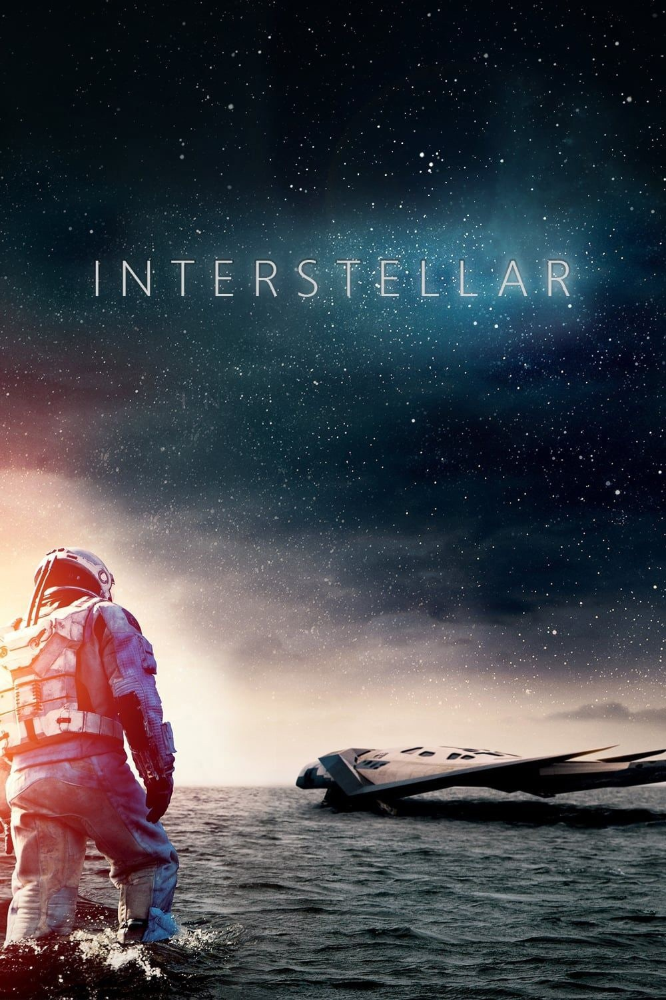

Год выхода: 2014
Жанр: Научная фантастика, драма, приключения
Тип: Фильм
Режиссёр: Кристофер Нолан
Рейтинг: PG-13
Описание: Фильм "Интерстеллар" рассказывает о группе астронавтов, отправившихся в эпическое космическое путешествие в поисках нового дома для человечества. Земля стоит на грани экологической катастрофы, и герои должны исследовать удаленные галактики и червоточины, чтобы спасти будущее человеческой расы. Фильм исследует темы времени, пространства, любви и выживания в безжалостной космической среде. "Интерстеллар" завораживает своей визуальной красотой и философскими вопросами о природе вселенной и человеческой судьбе.